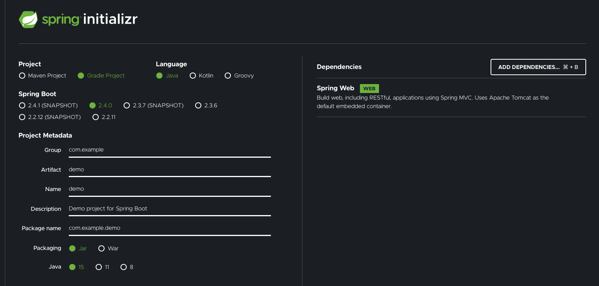

Getting Started
Create a new Spring Boot application¶
The DGS framework is based on Spring Boot, so get started by creating a new Spring Boot application if you don't have one already. The Spring Initializr is an easy way to do so. You can use either Gradle or Maven, Java 8 or newer or use Kotlin. We do recommend Gradle because we have a really cool code generation plugin for it!
The only Spring dependency needed is Spring Web.

Open the project in an IDE (Intellij recommended).
Adding the DGS Framework Dependency¶
Add the platform dependencies to your Gradle or Maven configuration.
The com.netflix.graphql.dgs:graphql-dgs-platform-dependencies dependency is a platform/BOM dependency, which aligns the versions of the individual modules and transitive dependencies of the framework.
The com.netflix.graphql.dgs:graphql-dgs-spring-boot-starter is a Spring Boot starter that includes everything you need to get started building a DGS.
If you're building on top of WebFlux, use com.netflix.graphql.dgs:graphql-dgs-webflux-starter instead.
repositories {
mavenCentral()
}
dependencies {
implementation(platform("com.netflix.graphql.dgs:graphql-dgs-platform-dependencies:latest.release"))
implementation "com.netflix.graphql.dgs:graphql-dgs-spring-boot-starter"
}
repositories {
mavenCentral()
}
dependencies {
implementation(platform("com.netflix.graphql.dgs:graphql-dgs-platform-dependencies:latest.release"))
implementation("com.netflix.graphql.dgs:graphql-dgs-spring-boot-starter")
}
<dependencyManagement>
<dependencies>
<dependency>
<groupId>com.netflix.graphql.dgs</groupId>
<artifactId>graphql-dgs-platform-dependencies</artifactId>
<!-- The DGS BOM/platform dependency. This is the only place you set version of DGS -->
<version>4.1.0</version>
<type>pom</type>
<scope>import</scope>
</dependency>
</dependencies>
</dependencyManagement>
<dependencies>
<dependency>
<groupId>org.springframework.boot</groupId>
<artifactId>spring-boot-starter-web</artifactId>
</dependency>
<dependency>
<groupId>com.netflix.graphql.dgs</groupId>
<artifactId>graphql-dgs-spring-boot-starter</artifactId>
</dependency>
<dependency>
<groupId>org.springframework.boot</groupId>
<artifactId>spring-boot-starter-test</artifactId>
<scope>test</scope>
</dependency>
</dependencies>
Caution
The DGS Framework requires Kotlin 1.4, and does not work with Kotlin 1.3. Older Spring Boot versions may bring in Kotlin 1.3.
Important
If you use Spring Boot Gradle Plugin 2.3, you will have to be explicit on the Kotlin version that will be available. This plugin will downgrade the transitive 1.4 Kotlin version to 1.3. You can be explicit by setting it via Gradle's extensions as follows:
ext['slf4j.version'] = '1.4.31'
extra["kotlin.version"] = "1.4.31"
Creating a Schema¶
The DGS framework is designed for schema first development.
The framework picks up any schema files in the src/main/resources/schema folder.
Create a schema file in: src/main/resources/schema/schema.graphqls.
type Query {
shows(titleFilter: String): [Show]
}
type Show {
title: String
releaseYear: Int
}
This schema allows querying for a list of shows, optionally filtering by title.
Implement a Data Fetcher¶
Data fetchers are responsible for returning data for a query.
Create two new classes example.ShowsDataFetcher and Show and add the following code.
Note that we have a Codegen plugin that can do this automatically, but in this guide we'll manually write the classes.
@DgsComponent
public class ShowsDatafetcher {
private final List<Show> shows = List.of(
new Show("Stranger Things", 2016),
new Show("Ozark", 2017),
new Show("The Crown", 2016),
new Show("Dead to Me", 2019),
new Show("Orange is the New Black", 2013)
);
@DgsQuery
public List<Show> shows(@InputArgument String titleFilter) {
if(titleFilter == null) {
return shows;
}
return shows.stream().filter(s -> s.getTitle().contains(titleFilter)).collect(Collectors.toList());
}
}
public class Show {
private final String title;
private final Integer releaseYear ;
public Show(String title, Integer releaseYear) {
this.title = title;
this.releaseYear = releaseYear;
}
public String getTitle() {
return title;
}
public Integer getReleaseYear() {
return releaseYear;
}
}
@DgsComponent
class ShowsDataFetcher {
private val shows = listOf(
Show("Stranger Things", 2016),
Show("Ozark", 2017),
Show("The Crown", 2016),
Show("Dead to Me", 2019),
Show("Orange is the New Black", 2013))
@DgsQuery
fun shows(@InputArgument titleFilter : String?): List<Show> {
return if(titleFilter != null) {
shows.filter { it.title.contains(titleFilter) }
} else {
shows
}
}
data class Show(val title: String, val releaseYear: Int)
}
That's all the code needed, the application is ready to be tested!
Test the app with GraphiQL¶
Start the application and open a browser to http://localhost:8080/graphiql. GraphiQL is a query editor that comes out of the box with the DGS framework. Write the following query and tests the result.
{
shows {
title
releaseYear
}
}
Note that unlike with REST, you have to specifically list which fields you want to get returned from your query. This is where a lot of the power from GraphQL comes from, but a surprise to many developers new to GraphQL.
The GraphiQL editor is really just a UI that uses the /graphql endpoint of your service.
You could now connect a UI to your backend as well, for example using React and the Apollo Client.
Next steps¶
Now that you have a first GraphQL service running, we recommend improving this further by doing the following:
- Use the DGS Platform BOM to align DGS Framework dependencies.
- Learn more about datafetchers
- Use the Gradle CodeGen plugin - this will generate the data types for you.
- Write query tests in JUnit
- Look at example projects